29 декабря 1940 года состоялся первый полёт легендарного советского штурмовика Ил-2 под управлением лётчика-испытателя Владимира Коккинаки. Эта машина стала самым массовым самолётом Второй мировой войны, и, как полагают историки, внесла огромный вклад в победу над вермахтом. Для своего времени Ил-2 обладал весьма солидным вооружением, которое позволяло уничтожать практически все типы целей. За высокие боевые качества немцы прозвали детище Ильюшина «чёрной смертью». По мнению экспертов, хотя самолёт имел ряд недостатков, они нивелировались высокой надёжностью, а также выучкой лётного состава.
80 лет назад знаменитый лётчик-испытатель Владимир Коккинаки впервые поднял в воздух знаменитый бронированный штурмовик Ил-2, ставший впоследствии самым массовым самолётом Второй мировой войны. В общей сложности советская промышленность выпустила более 36 тыс. единиц этой машины.
«Штурмовик Ил-2 положил начало новому роду фронтовой авиации, став достижением авиационной науки своего времени. В его конструкции была реализована выдающаяся конструкторская идея: Сергей Владимирович Ильюшин заставил броню не только защищать, но и работать вместо обычного каркаса планера, что позволило значительно снизить вес машины», — говорится в материалах ПАО «Ил».
Первоначально Сергей Ильюшин планировал сделать из Ил-2 двухместную машину. При этом руководство СССР настояло на одноместной компоновке, но после начала Великой Отечественной войны промышленность освоила выпуск и двухместной модификации, которая расширила боевые возможности штурмовика.
Легендарный пистолет-пулемёт Шпагина был принят на вооружение 21 декабря 1940 года. Серийное производство ППШ было развёрнуто за...
17 января 1941 года был опубликован приказ наркома авиапромышленности СССР Алексея Шахурина. Документ обязывал предприятия выпускать одноместный Ил-2 с двумя пушками ШВАК (по 200 снарядов на орудие) и двумя пулемётами ШКАС (общий боекомплект 1500 патронов).
Позднее арсенал Ил-2 пополнился более мощными 23-мм пушками МП-6 и ВЯ-23. Бомбовая нагрузка штурмовика оценивалась в 400—600 кг. Для самообороны, помимо стрелкового оружия, экипаж самолёта использовал авиационные гранаты, которые сбрасывались на парашютах.
Длина одноместной модификации Ил-2 составляла 11,6 м, размах крыла — 14,6 м, нормальная взлётная масса — 5,31 т, максимальная скорость — 433 км/ч, высота полёта — 7800 м, дальность полёта — 658 км. Штурмовик оснащался поршневым двигателем АМ-38 мощностью 1575 л. с.
«Ил-2 задумывался как двухместная машина. Выбор в пользу одноместной компоновки был продиктован соображениями экономии, но война расставила всё по своим местам: вскоре промышленность начала массово выпускать Ил-2 со стрелком-радистом в задней кабине для обороны задней полусферы», — пояснил в беседе с RT заслуженный лётчик РФ Владимир Попов.
Детище Сергея Ильюшина продемонстрировало высокую эффективность в борьбе практически со всеми типами наземных и надводных объектов. Основными целями Ил-2 становились пехотные подразделения, транспортные средства, мосты и переправы противника, морская артиллерия и вражеские корабли.
В первые годы войны серьёзным недостатком штурмовика было отсутствие средств поражения немецких танков, однако ситуация изменилась с появлением в 1943 году противотанковых авиационных бомб ПТАБ-2,5—1,5 конструкции Ивана Ларионова. Несмотря на скромную массу (1,37 кг), данные боеприпасы не оставляли шансов даже тяжёлым немецким «Тиграм» и «Пантерам».
Боевое крещение ПТАБ-2,5—1,5 получили 5 июля 1943 года в ходе Курской битвы. Чтобы повысить вероятность поражения бронетанковой техники неприятеля, экипажи Ил-2 в процессе бомбометания создавали огненную полосу шириной примерно 15 м и длиной 70 м при высоте сброса боеприпасов в 75—100 м.
Демонстрационный полёт восстановленного штурмовика Ил-2
«Пушки Красной армии не брали в лоб броню немецких танков, но сверху их защита была весьма условной, поэтому её удавалось пробивать небольшими авиационными боеприпасами, а иногда и снарядами из орудий. Налёты эскадрилий Ил-2 стали серьёзной угрозой мобильным бронетанковым подразделениям вермахта», — пояснил Владимир Попов.
Как отмечают эксперты, успешные действия штурмовой авиации снижали потери Красной армии, поддерживали её наступательные и оборонительные операции. Руководство советских ВВС старалось применять Ил-2 таким образом, чтобы эскадрильи постоянно меняли друг друга в воздухе, не давая врагу передышки.
Преимущество советских штурмовиков заключалось в том, что они могли неожиданно появиться над частями противника, сея панику в его рядах. В зависимости от обстановки, бомбы сбрасывались с пикирования, горизонтального либо бреющего полёта.
Парад на Красной площади в Москве 7 ноября 1941 года. Великая Отечественная война 1941—1945 гг.
«Помог поднять боевой дух»: как проходил военный парад в Москве 7 ноября 1941 года
7 ноября 1941 года на Красной площади прошёл парад в честь годовщины Великой Октябрьской социалистической революции. В эти дни нацисты...
«Есть самолёты, представляющие собой удивительные творения человеческого разума… Именно к таким самолётам-находкам можно в первую очередь отнести Ил-2», — описывал детище Ильюшина Герой Советского Союза лётчик Николай Платонов.
За высокие боевые качества немцы называли Ил-2 «чёрной смертью», «чумой», «летающим танком» и «бетонным самолётом». Советские военнослужащие удостоили штурмовик ласкового прозвища «Илюша».
Принято считать, что колоссальный вклад самолёты Ильюшина внесли в успех крупномасштабной операции «Багратион», проходившей летом 1944 года. В ходе неё советские войска полностью уничтожили 17 дивизий и три бригады группы армий «Центр».
«Его (Ил-2. — RT) конструкция и тактика применения со временем совершенствовались, но неизменным оставалось одно: если над немецкими позициями появлялись «летающие танки», враг в ужасе стрелял из всего, что было, в надежде остановить неизбежный опустошительный удар», — отмечают специалисты ПАО «Ил».
Как говорит Владимир Попов, положительный эффект от применения Ил-2 заключался не только в нанесении существенного материального ущерба врагу. Большое значение имел моральный фактор — пехотинцы Красной армии после обидных поражений 1941 года наконец-то ощутили надёжную поддержку авиации.
К главным достоинствам Ил-2, помимо ударных характеристик, относится простота в изготовлении и эксплуатации. Эти качества позволили советской промышленности в кратчайшие сроки наладить массовый выпуск и ремонт штурмовиков.
Своей популярностью Ил-2 обязан и высоким уровнем защищённости. Гениальность решения Илюшина состояла в том, что броня в конструкции штурмовика выполняла одновременно функцию каркаса планера, отмечают эксперты.
Бронекорпуса для Ил-2 производились на заводах в Подольске, Ленинграде, Сталинграде, в Запорожье и Нижегородской области. Незамысловатая на первый взгляд концепция ильюшинского штурмовика спасла множество жизней советских лётчиков, часто попадавших в самые разные экстремальные ситуации. В своих письмах они благодарили великого конструктора.
Авиаконструктор Сергей Ильюшин и лётчик-испытатель Владимир Коккинаки на фоне самолёта Ил-2 РИА Новости © Аркадий Шайхет
«В годы Великой Отечественной войны, а точнее в 1942 году, мне довелось производить посадку на самолёте Ил-2 на крупный еловый лес, т. к. самолёт был над целью подбит противником. Описывать, как производил посадку, не буду. Но на высоте половины деревьев отвалился по заднюю бронеплиту фюзеляж, деревьями обрезало крылья, после чего самолёт носом ударился в землю. Броня так же, как и в бою, спасла мне жизнь», — благодарил Ильюшина в своём письме бывший лётчик Фёдор Борисов.
Кроме того, пилоты отмечали хороший обзор, удобство наводки на цель при стрельбе и бомбометании с бреющего полёта. Данные качества были достигнуты благодаря тому, что Ильюшин опустил двигатель ниже кабины.
Между тем Ил-2, естественно, не был идеальной боевой машиной. В самолёте «плохо слушались органы управления». Также, несмотря на все усилия Ильюшина, из-за необходимости постоянного совершенствования уровня защиты Ил-2 оказался перетяжелённой машиной.
«Призыв о помощи»: как Пражская операция советских войск спасла столицу Чехословакии
75 лет назад завершилась Пражская стратегическая наступательная операция Красной армии. Она стала последним крупным наступлением...
Идеальной техники вообще не бывает. С одной стороны, лётчики достаточно быстро осваивали штурмовики, но органы управления нередко подводили по причине перетяжелённости машины. Убрать броню было тоже нельзя. Если бы это сделали, то Ил-2 оказался бы лёгкой добычей зенитной артиллерии и других вооружений неприятеля
Специфика применения штурмовой авиации в годы ВОВ заключалась в нанесении ударов в условиях непосредственной близости к противнику. Действуя на предельно малых высотах, Ил-2 практически всегда находился в зоне поражения средств ПВО и стрелкового оружия вермахта.
Да, Ил-2 был хорошо бронирован, но летать на нём из-за особенностей боевого применения было гораздо опаснее, чем на истребителях или бомбардировщиках. Штурмовики работали очень близко к земле, и огонь по ним вёлся из всего, что стреляло. Ребята, которые пилотировали Ил-2, — настоящие герои.
Что отдельные недостатки Ил-2 нивелировались высокой надёжностью, простотой в серийном производстве, выучкой и находчивостью лётного состава. По его мнению, Ильюшин смог найти наиболее оптимальный баланс между требованиями к уровню защиты, объёму полезной нагрузки, набору вооружения, скоростью, манёвренностью и массой других важных качеств.
Как отметил Владимир Попов, сочетание боевых и эксплуатационных характеристик в Ил-2 позволяет сделать вывод, что у советского конструктора получилось создать самую эффективную концепцию штурмовика периода Второй мировой войны.
По словам эксперта, Ильюшин предвидел жестокие условия, в которых предстоит применять его детище. По этой причине он воплотил в Ил-2 не только качества штурмовика, но и универсальной боевой машины. Так, в условиях дефицита авиатехники Красная армия использовала Ил-2 в разведывательных целях, а двухместные модификации самолёта Ильюшина могли отправляться на боевые задания без прикрытия истребителей.
«Ил-2 — это действительно потрясающая для своего времени машина. Немцы неслучайно прозвали наш штурмовик «чёрной смертью». Лётчики выполняли опаснейшую работу, но умудрялись неплохо справляться даже с зенитными подразделениями немцев. Отработанная тактика ведения боевых действий позволяла экипажам Ил-2 огненным мечом проходить по позициям противника. Их сокрушительные удары сильно облегчили работу нашей пехоте на всех этапах войны», — резюмировал Попов.
Общие сведения
Самолёт Ил-2 — одномоторный классический моноплан смешанной конструкции с низкорасположенным крылом и убираемым в полёте двухстоечным шасси с хвостовым колесом. В качестве силовой установки был применён рядный поршневой бензиновый двигатель водяного охлаждения с воздушным винтом изменяемого шага. Самолёт изначально проектировался для действий над полем боя, для непосредственной поддержки наземных войск, и имеет достаточно оригинальные конструктивные решения. За время производства несколько раз подвергался модификациям и целому ряду доработок.
Планер
Выпускался в одноместном варианте на ранних этапах производства, затем в двухместном.
Носовая часть самолёта представляет собой разборный бронекорпус с эксплуатационными бронированными люками, в котором размещена винто-моторная установка, кабина лётчика и бензобаки. Бронекорпус полностью включался в силовую схему планера самолёта и воспринимал все нагрузки от двигателя, крыла и хвостовой части фюзеляжа.
Бронекорпус выполнялся из листов гомогенной брони АБ-1 (АБ-2) с переменной толщиной от 4 до 6 мм.
Верхние, боковые и нижние листы и крышки капота мотора имели толщину 4 мм. Боковые стенки, прикрывающие нижний и задний бензобаки, сделаны из 5- и 6-мм брони, а переднего бензобака — 4-мм. Боковые стенки кабины лётчика имели толщину 6 мм. Пол кабины изготавливался из 5-мм листов брони. Со стороны задней полусферы лётчик и задний бензобак защищались 12-мм бронеперегородкой из цементованной брони ХД. Одновременно она являлась и силовым шпангоутом стыка бронекорпуса с хвостовой частью фюзеляжа. Прозрачная броня устанавливалась также и за головой лётчика. Общий вес бронедеталей серийного Ил-2 составил 780 кг.
Хвостовая часть фюзеляжа состоит из деревянного каркаса с 16-ю рамами (шпангоутами) и 12-ю стрингерами. Рамы №№ 1, 11, 14, 15 усиленные и выполнены из сплошной фанерной переклейки. Все остальные рамы коробчатого сечения (фанерные стенки и сосновые пояса). Между рамами №13 и №14 установлена дюралевая жёсткость.
Стыковка носовой и хвостовой частей фюзеляжа производится на заклёпках с помощью дюралевых лент-накладок. В месте стыка частей фюзеляжа расположено рабочее место второго члена экипажа.
Кабина лётчика расположена в бронекорпусе, также сзади кресла установлена бронеплита из материала марки «ХД» толщиной 12 мм. Фонарь состоит из двух частей: неподвижной и подвижной, сдвигающейся на роликах по бортовым рельсам. При этом боковые передние стёкла подвижной части сдвигались, что давало возможность открывать замок фонаря снаружи. Передние бронестёкла толщиной 64 мм. Кабина стрелка находилась вне бронекорпуса и имела только локальное бронирование — 5 мм бронестенку со стороны задней полусферы. У стрелка было подвесное лямочное сидение. Кабина стрелка закрывалась плексигласовым колпаком, который в летнее время снимали для лучшего обзора.
Крыло самолёта имеет два разъёма, которые делят его на три части — центроплан, неразъёмно соединённый с фюзеляжем, и две консоли. Силовой каркас крыла состоит из двух лонжеронов, 21 нервюры, стрингеров и обшивки. 22-я нервюра входит в конструкцию законцовки крыла. Лонжероны клёпанные, балочной конструкции, с катанными хромансилевыми термообработанными поясами постоянного таврового сечения и стенками из листового дюраля. С центропланом консоли стыкуются с помощью четырёх стыковочных узлов с конусными болтами.
На каждой плоскости крыла установлен элерон с полной весовой компенсацией, состоящий из двух половин — корневой и концевой. На корневых элеронах установлены флетнеры.
На нижней части центроплана и консолей установлены щитки-закрылки с пневматическим приводом. Каждый щиток состоит из двух частей и отклоняется на взлёте на угол 17°, на посадке на угол 45°. Щитки приводятся в работу пневмоцилиндром-выключателем механизма, управление из кабины — тросовое. Давление в системе пневмопривода — 50 атм.
Стабилизатор цельнометаллический, с силовым каркасом лонжеронной конструкции. Состоит из двух половин, которые стыкуются между собой с помощью стыковочных гребёнок, установленных на верхних и нижних полках переднего и заднего лонжеронов стабилизатора четырьмя болтами каждая. Угол установки стабилизатора составляет минус 1° ±15′
Руль высоты с полной весовой компенсацией состоит из двух половин, состыкованных между собой. Каркас руля высоты дюралевый, обшивка из полотна. На задней кромке РВ установлен триммер-флетнер. Полный угол отклонения РВ составляет вверх — 28°, вниз — 16°40′.
Киль деревянной конструкции, выполнен заодно с фюзеляжем. К килю на трёх поворотных узлах подвешивается руль направления с флетнером. Полный угол отклонения РН составляет ±27° от нейтрали, угол отклонения флетнера — ±25°30′.
Управление рулём высоты и щитками осуществляется с помощью тяг, управление триммерами — тросовое (диаметром 3,5 мм), управление элеронами — смешанное. На поздних сериях выпуска устанавливался в системе тяг продольного управления механизм повышения устойчивости полёта, состоящий из контрбалансира и пружинного компенсатора, заметно упрощавший пилотирование, предотвращавший продольную раскачку и позволявший лететь до двух минут с брошенной ручкой управления. На строевых самолётах данный механизм устанавливался согласно бюллетеню промышленности №85ИК.
Шасси самолёта состоит из двух основных стоек и хвостового колеса. Основные стойки имеют по одному тормозному колесу, тормоза пневматические. Уборка и выпуск шасси производится от пневмосистемы с редуцированным давлением 35 атм. Запас сжатого воздуха на самолёте размещается в двух 12-литровых баллонах с давлением зарядки 150 и 50 атм, причём если первый баллон заряжается воздухом перед полётом от наземного источника, то второй подпитывается в полёте сжатым воздухом от компрессора АК-50, установленного на моторе. В случае израсходования воздуха и отказа воздушной системы шасси можно выпустить аварийно от ручного механизма с тросовым приводом.
Амортизаторы основных стоек имеют полный ход поршня 160 мм, заряжаются сжатым воздухом до давления 29 атм (при поднятой машине и вывешенных стойках) и заправляются амортизационной смесью в объёме 530 см³, состоящей из:
- глицерин технический 70%
- спирт-ректификат 25 %
- вода дистиллированная 5%
Хвостовой костыль неубираемый, снабжён пневматиком 400х150. При рулении самоориентирующийся, при взлёте колесо принудительно фиксируется в нейтральном положении. Для гашения ударов установлен газо-масляный амортизатор с полным ходом штока поршня 110 мм. Начальное давление воздуха в амортизаторе костыля — 38 атм. Объём спиртоглицериновой смеси — 355 см³.
Давление накачки колёс шасси: основных стоек — 3,5-3,7 атм, колеса костыля — 3-3,5 атм.
Двигатель
Основная статья: АМ-38
АМ-38Ф — поршневой авиационный двигатель жидкостного охлаждения, 12-цилиндровый, с 60° V-образным развалом цилиндров, форсированный. Отличается от базовой модели повышенной на 100 л.с. мощностью. Устанавливался на двухместные варианты Ил-2.
- Рабочий объём двигателя — 46,66 литра.
- Степень сжатия в цилиндрах — 6+1.
- Система запуска — воздушная ВС-50, от бортового баллона со сжатым воздухом с давлением 35-50 атм.
- Мощность на взлётном режиме (не более 5 мин) при оборотах коленвала 2350±2 — 1700-2% л.с.
- Мощность на номинальном режиме при оборотах коленвала 2050±2% — 1500±2% л.с.
- Применяемое топливо — 4Б-78 Уфимское, с октановым числом 95; 4Б-78 Бакинское, с октановым числом не меньше 93; этилированный бензин Б-95.
- Сорт масла — «МС» или «МК-В» летом, «МЗС» - зимой.
- Охлаждающая жидкость — мягкая вода с добавлением 0,3% хромпика по весу.
- Вес мотора сухой — 880±2 кг.
Топливная система
Включает три основных бензобака: верхний (передний), нижний, задний и два подвесных бензобака. Общая ёмкость основной системы — 730 литров (550 кг). Ёмкость подвесных бензобаков — 2 × 150 литров, в сумме 1030 литров (756 кг).
Топливо 4Б-78 представляет собой смесь авиационного бензина Б-78 с добавкой 4 см³ продукта Р-9 на 1 кг топлива. Продукт Р-9 — это высокотоксичная смесь для повышения октанового числа нефтепродуктов, состоящая из 55% тетраэтилсвинца, 35 % бромистого этила, 10 % монохлорнафталина и красного красителя.
Заправка самолёта топливом производится через заливную горловину на переднем баке, по остальным бакам топливо распределяется самотёком. Время полной заправки — 22-24 минуты. Также необходимо отдельно заправлять заливной бачок для запуска мотора — летом обычным моторным топливом, зимой — смесь из 80% моторного топлива и 20% эфира. Топливомеры ползункового типа (реостаты), указатель бензиномера типа БЭ-09.
Для предотвращения возгорания бензина при прострелах топливных баков была введена система нейтрального газа. На борту самолёта установлен баллон с углекислотой объёмом 2 литра, заряжаемый до давления 150 атм (1200 гр жидкого СO2). В полёте углекислота подаётся в надтопливное пространство бензобаков.
Масляная система двигателя
Предназначена для смазки движущихся частей мотора в процессе работы. Масло находится в картере мотора (8-16 литров), в маслорадиаторе ОП-446 (13 литров), в маслобаках и трубопроводах. Общая ёмкость системы 81 литр. В полёте часовой расход масла составляет 18 кг/час. Для повышения оперативной готовности к вылету на самолёты поздних серий выпуска стали устанавливать систему разжижения моторного масла бензином — при соблюдении процедуры перед выключением двигателя такое масло позволяло запускать мотор без подогрева масла при температуре наружного воздуха до -30°С.
Система охлаждения двигателя
Система закрытого типа с давлением 1,4-1,5 атм. Общая ёмкость системы 77-80 литров пресной воды, с добавлением калиевой соли дихромовой кислоты (хромпик) из расчета 3 гр. на литр воды. Радиатор типа ОП-86, с вручную регулируемой заслонкой продува. При минусовых температурах наружного воздуха вода из системы после полёта сливается, а при подготовке к полёту предварительно подогревается наземными службами и заливается в систему, время полного заполнения — 3-5 минут. При работе с охлаждающей жидкостью соблюдались определённые меры безопасности, так как дихромат калия высокотоксичен и канцерогенен.
Электрооборудование самолёта
На Ил-2 установлена бортовая сеть на 27 вольт постоянного тока. На самолётах до № 1875102 электропроводка выполнена двухпроводной, все провода экранированные. На самолётах после № 1875102 вся бортовая сеть выполнена однопроводной, проводами без экранирующей оплётки (за исключением проводов зажигания, тахометра, радио и участка проводки от генератора до регуляторной коробки), с заземлением на массу минусовых проводов сети. В качестве источников электроэнергии использовался установленный на моторе генератор постоянного тока ГС-10-350 (мощностью 350 ватт и отдаваемым в сеть напряжением 27,5 вольт) и кислотная аккумуляторная батарея 12-А-10 (напряжением 24 вольта и ёмкостью 10 А·ч). При необходимости проверок под током к самолётному борту можно было подключить наземную аккумуляторную батарею.
Вся электропроводка собрана в жгуты, обмотана киперной лентой и отбандажирована на дюралевых хомутах. Для улучшения ремонтопригодности самолёта в однопроводной бортовой сети стали использовать деление жгутов на участки и ввели 15 разъёмных панелей.
Для питания радиооборудования на самолёте были установлены электромашинные преобразователи напряжения — умформеры. Анодная цепь радиоприёмника РСИ-4 питается от умформера типа РУ-11А, анодная цепь передатчика РСИ-4 — от умформера РУН-30А.
Атака с:
- малых высот (400—1000 м) на пологом пикировании;
- бреющего полёта на высотах 15-50 м, малая высота, высокая угловая скорость и складки местности должны были защищать самолёт от огня зенитных орудий, в то время как броня защищала его от стрелкового огня вражеской пехоты;
После израсходования боезапаса бомб и ракет Ил-2 мог вести воздушный бой с вражескими самолётами. Иногда советские лётчики для атаки немецких бомбардировщиков Ju 87 («штука», «лаптёжник»), пользуясь внешним сходством машин, применяли тактический приём «обуть лапти», то есть выпустить шасси и пристроиться к строю немецких самолётов. При блокировании Демянского и Сталинградского котлов Ил-2 использовался для атаки на транспортные Ju-52 — его скоростных возможностей для этого вполне хватало, а мощная бронезащита позволяла игнорировать оборонительный огонь бортовых пулемётов.
В середине июня (1942) к нам поступил приказ Народного комиссара обороны «Об использовании самолетов Ил-2 как дневных бомбардировщиков». В нем указывалось: «Мы можем и должны значительно увеличить наши бомбардировочные дневные удары по противнику, но для этого надо немедля покончить с вредной практикой недооценки самолетов Ил-2 как дневных бомбардировщиков и добиться того, чтобы ни один самолет Ил-2 не вылетал в бой без полной бомбовой нагрузки». Вместо 52 таких машин, предусмотренных штатами, мы располагали всего девятью, поэтому относились к ним с особой бережливостью. И все же приказ Наркома обороны довели до каждого авиатора 7-го гвардейского и 210-го штурмовых авиаполков. Там насчитывалось 35 готовых к бою экипажей, но 26 из них были «безлошадниками». Лётчики, не имевшие самолетов, с горечью спрашивали: — А как же мы должны увеличивать бомбовую нагрузку? --- Приходилось успокаивать их, заверять, что в скором времени каждый будет иметь боевой самолёт. Счастливчики же, за которыми были закреплены «ильюшины», тотчас начали выискивать новые пути повышения боевых возможностей штурмовиков. Полётный вес Ил-2 в перегрузочном варианте допускался до 5596 килограммов, то ость был на 200 килограммов больше нормального. Если раньше это превышение использовалось для создания определённого резерва горючего, то теперь лётчики стали на 200 килограммов больше брать бомб и других боеприпасов. Некоторые горячие головы даже предлагали снять бронеспинки, дабы увеличить полезную нагрузку самолёта, однако такие рискованные предложения не нашли поддержки у командования. Мы дорожили жизнью лётчиков и воздушных стрелков.
<«Кабина смерти»
В первые же дни войны выявилось, что одноместные штурмовики несут неоправданно большие потери от истребителей противника. По требованию лётчиков во всех штурмовых полках инженерно-технический состав с участием самих пилотов начал изыскивать пути защиты самолёта от нападения истребителей. В верхней части фюзеляжа прорезали отверстие для возможности разместить стрелка и смонтировать хотя бы примитивную установку пулемёта с минимальным боекомплектом. Первыми воздушными стрелками стали механики и мастера по вооружению. Нагрузка на вооруженцев резко возросла — надо было и на задание летать, и, возвратившись, успевать готовить вооружение к полёту. Летали они с большим желанием, хотя и называли между собой временную конструкцию позиции стрелка «кабиной смерти».
Наименее эффективным средством поражения бронетанковой техники противника в начальный период войны являлись авиабомбы. 25 июня 780 самолёто-вылетов позволило уничтожить лишь 30 танков, 16 орудий и 60 автомашин с живой силой. При этом наилучшие результаты достигались при использовании фугасных авиабомб типа ФАБ-100.
Действительно, при разрыве ФАБ-100 на расстоянии 1-5 м от танка осколки пробивали броню средних немецких танков типа Pz.lVAusfD, Pz.lllAusfG u StuG III Ausf E толщиной до 30 мм и, кроме этого, от взрывной волны разрушались заклепочные и сварные швы танков. Осколочные же авиабомбы типа А0-25с и А0-25 м, а также фугасные типа ФАБ-50, ФАБ-50 м обеспечивали поражение только лёгких немецких танков типа Pz.38(t) Ausf С и Pz.ll Ausf F с пробитием осколками бортовой брони толщиной 15-20 мм при разрыве в непосредственной близости (0,5-1 м) или же при прямом попадании.
Тяжёлой и неразрешённой проблемой была также защита стрелка. В первые годы войны штурмовики (а их пилоты не обучались даже основам воздушного боя), зачастую лишённые истребительного прикрытия, при встрече с истребителями противника пытались отрываться на бреющем полёте. Данный приём приводил к массовым потерям, и пилоты требовали размещения стрелка. Такая модернизация часто производилась прямо в частях, место для стрелка вырезалось позади бронекорпуса и его защита вообще отсутствовала. С 1942 появилась двухместная заводская версия, но из-за проблем с центровкой стрелок был защищён 6 мм бронеплитой (для сравнения, задняя стенка бронекорпуса — 12 мм) только со стороны хвоста. Следствием недостаточной защищённости являлась высокая смертность среди стрелков: за время проведения войсковых испытаний на 8 поражённых стрелков вышел из строя всего 1 пилот. В среднем по статистическим оценкам, при атаке истребителем вероятность поражения стрелка была в 2-2,5 раза выше, чем защищаемого им самолёта, хотя от зенитного огня это соотношение было 1:1.
Потери Илов от истребителей на всём протяжении войны были ниже, чем потери от зенитной артиллерии, а с 1943 вылеты штурмовиков производились только с истребительным прикрытием. Тем не менее, оружие самообороны с успехом применялось штурмовиками до конца войны — так, именно стрелком Ил-2 был убит в воздухе в феврале 1945 года четвёртый по результативности ас Люфтваффе Отто Киттель. Следующий штурмовик КБ Ильюшина, Ил-10, строился изначально двухместным, как и дальнейшие реактивные проекты (Ил-40, Ил-102).
| 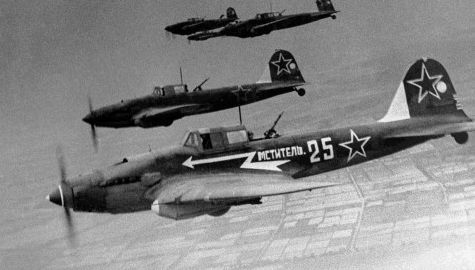 |
| 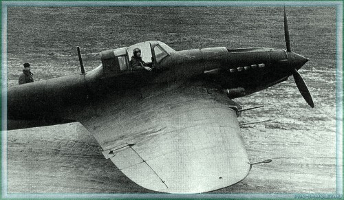 |
| 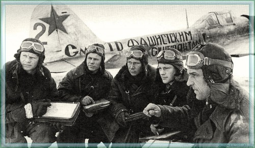 |
| 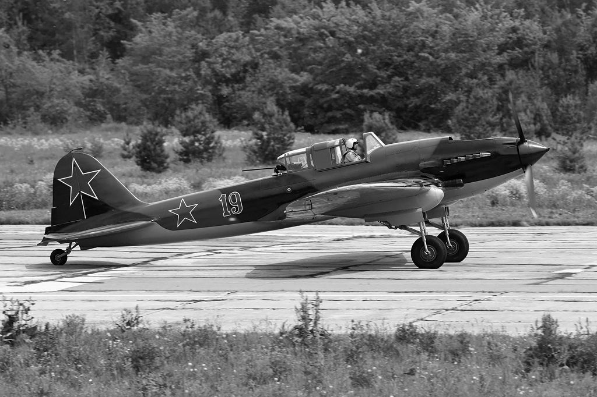 |
| 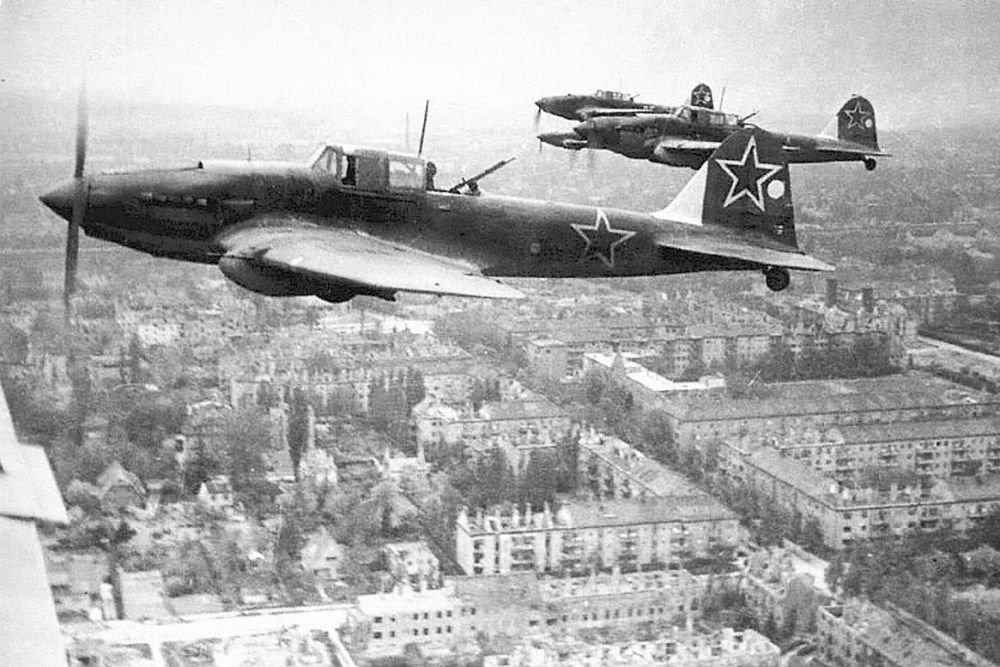 |
| 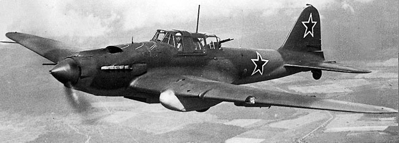 |
| 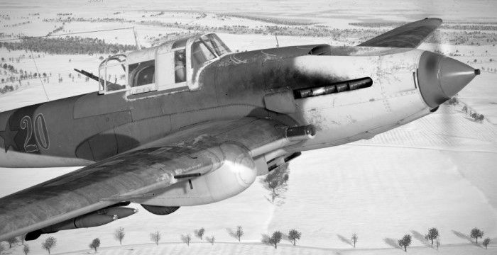 |
| 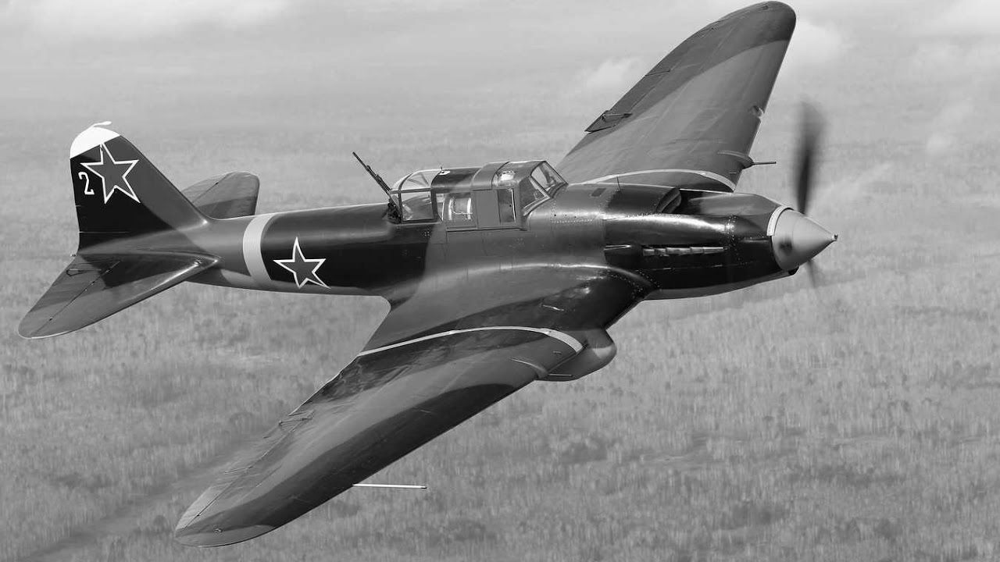 |
| 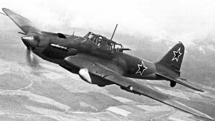 |
| 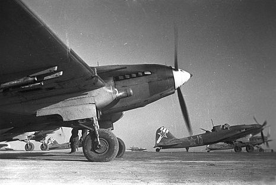 |
| 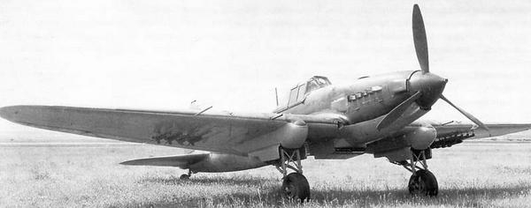 |
| 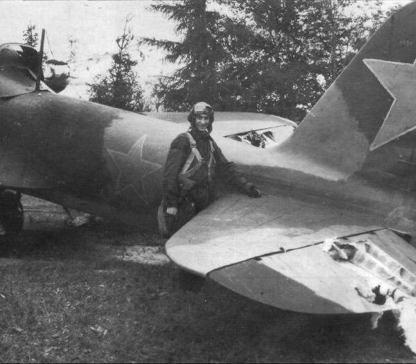 |
| 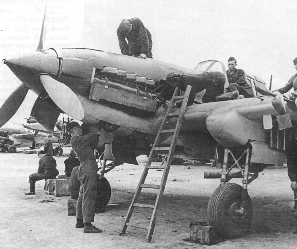 |
| 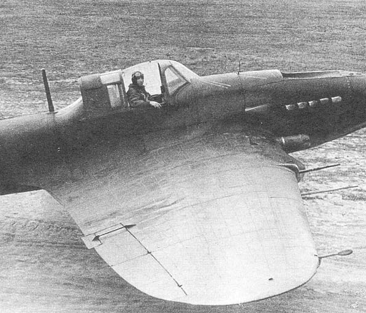 |
| 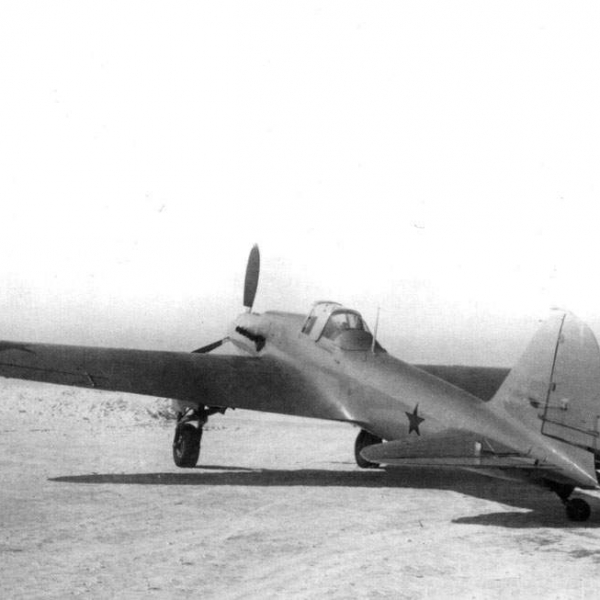 |
| 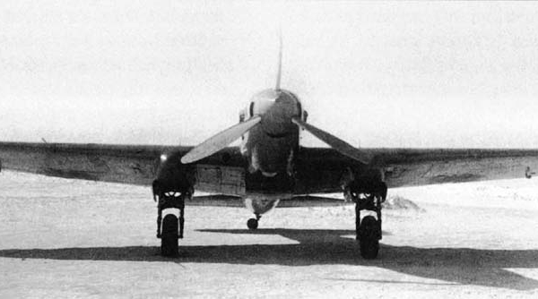 |
| 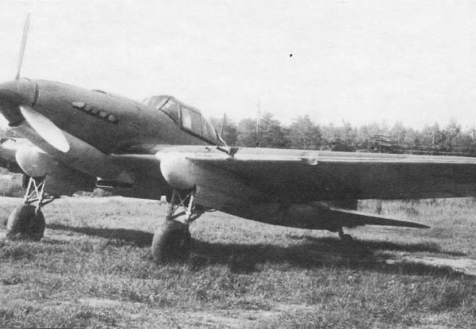 |
| 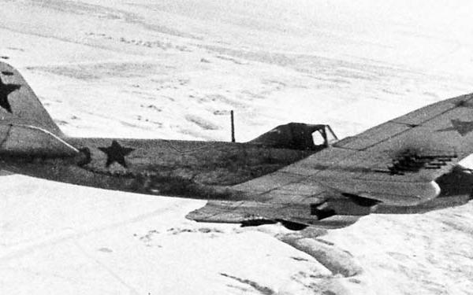 |
| 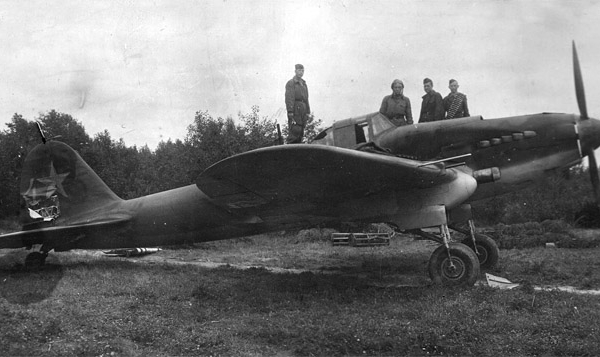 |
| 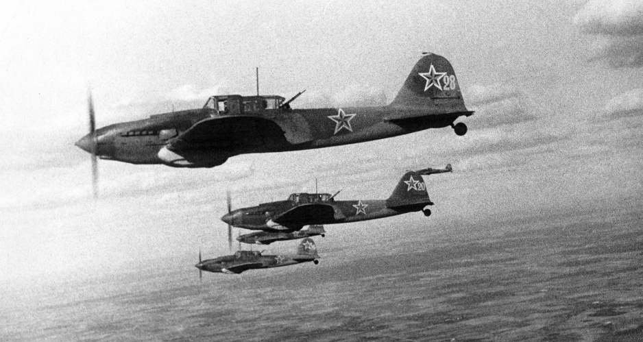 |